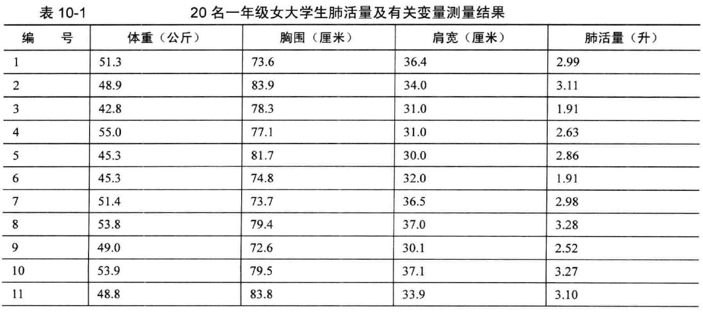
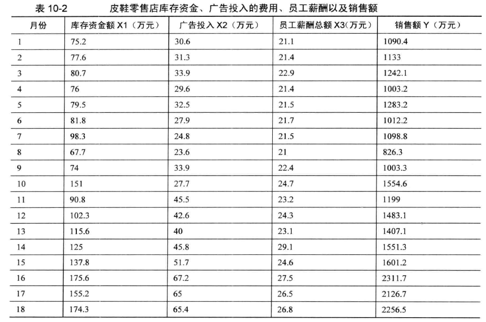

Chapter 7 多元线性回归
7.1 多元线性回归模型
➢ 因变量y, 自变量为x1,x2,…,xm
\[ \widehat{y}=a+b_1x_1+b_2x_2+…+b_mx_m \]
➢ a为截距(intercept)，又称常数项(constant),表示各自变量均为0时y 的估计值
➢ bi 称为偏回归系数(partial regression coefficient)，简称为回归系数
➢ \(\hat{y}\)称为 y 的估计值或预测值(predicted value)
7.2 回归模型的应用条件
\[ y_i=\widehat{y}+e_i=b_0+b_1x_{1i}+b_2x_{2i}+ \cdots +b_mx_{mi}+e_i \]
\(e_i\) 称为残差:
自变量与因变量的关系是线性的(Linear )；
\(Cov(e_i,e_j)=0\)，即独立性(Independence )；
\(e_i\)~\(N(0,\sigma^2)\)，即正态性(Normality)；
\(Var(e_i)=\sigma^2\)，即方差齐性(Equal variance)；
7.3 偏回归系数的估计
最小二乘法 (least square, LS)
基本思想：残差平方和(sum of squares for residuals)最小！
7.3.1 回归方程的假设检验

未引进回归时的总变异(sum of squares about the mean of Y):\(\sum (Y-\overline Y)^2\)
引进回归以后的剩余变异(sum of squares about regression): \(\sum (Y-\widehat Y)^2\)
回归的贡献，回归平方和(sum of squares due to regression)：\(\sum (\widehat Y-\overline Y)^2\)
7.4 案例一
例10-1 某学校20 名一年级女大学生体重(公斤)、胸围(厘米)、肩宽(厘米)及肺活量(升)实测值如表1 0-1 所示，试对影响女大学生肺活量的有关因素作多元回归分析

# 第三节多元线性回归案例1
Example10_1 <- read.table ("data/example10_1.csv", header=TRUE, sep=",")
library(MASS)
attach(Example10_1)
fit1 <- lm(y~ x1 + x2 + x3)
fit2 <- lm(y ~ 1)#拟合一个空模型
stepAIC(fit2,direction="both",scope=list(upper=fit1,lower=fit2))## Start: AIC=-26.8
## y ~ 1
##
## Df Sum of Sq RSS AIC
## + x3 1 2.4153 2.3227 -39.060
## + x1 1 2.3089 2.4291 -38.164
## + x2 1 1.2593 3.4787 -30.982
## <none> 4.7380 -26.802
##
## Step: AIC=-39.06
## y ~ x3
##
## Df Sum of Sq RSS AIC
## + x1 1 0.57921 1.7435 -42.797
## + x2 1 0.30171 2.0210 -39.843
## <none> 2.3227 -39.060
## - x3 1 2.41534 4.7380 -26.802
##
## Step: AIC=-42.8
## y ~ x3 + x1
##
## Df Sum of Sq RSS AIC
## + x2 1 0.44098 1.3025 -46.629
## <none> 1.7435 -42.797
## - x1 1 0.57921 2.3227 -39.060
## - x3 1 0.68561 2.4291 -38.164
##
## Step: AIC=-46.63
## y ~ x3 + x1 + x2
##
## Df Sum of Sq RSS AIC
## <none> 1.3025 -46.629
## - x3 1 0.24029 1.5428 -45.243
## - x2 1 0.44098 1.7435 -42.797
## - x1 1 0.71848 2.0210 -39.843##
## Call:
## lm(formula = y ~ x3 + x1 + x2)
##
## Coefficients:
## (Intercept) x3 x1 x2
## -4.71489 0.04924 0.06091 0.03563结果解读 1.1
Start: AIC=-26.8; y ~ 1: 空载模型
Step: AIC=-39.06;y ~ x3:剔除x3后，AIC变小，说明X3应该在方程内
Step: AIC=-46.63;y ~ x3 + x1 + x2: 直至最后一步，AIC仍在变小，说明x1、x2、x3均应纳入回归方程。
若有一步剔除某个变量后，AIC值没有变化或者变大，则说明该变量应该从回归方程中剔除。
summary (fit1)##
## Call:
## lm(formula = y ~ x1 + x2 + x3)
##
## Residuals:
## Min 1Q Median 3Q Max
## -0.3749 -0.2747 0.1042 0.1820 0.4277
##
## Coefficients:
## Estimate Std. Error t value Pr(>|t|)
## (Intercept) -4.71489 1.30082 -3.625 0.00228 **
## x1 0.06091 0.02050 2.971 0.00901 **
## x2 0.03563 0.01531 2.327 0.03339 *
## x3 0.04924 0.02866 1.718 0.10507
## ---
## Signif. codes: 0 '***' 0.001 '**' 0.01 '*' 0.05 '.' 0.1 ' ' 1
##
## Residual standard error: 0.2853 on 16 degrees of freedom
## Multiple R-squared: 0.7251, Adjusted R-squared: 0.6736
## F-statistic: 14.07 on 3 and 16 DF, p-value: 9.464e-05y #观察值## [1] 2.99 3.11 1.91 2.63 2.86 1.91 2.98 3.28 2.52 3.27 3.10 3.28 1.92 3.27 2.64
## [16] 2.85 3.16 2.51 3.15 1.92fitted (fit1) #预测值## 1 2 3 4 5 6 7 8
## 2.824232 2.926867 2.208092 2.908425 2.432268 2.284897 2.838810 3.212696
## 9 10 11 12 13 14 15 16
## 2.338328 3.227273 2.912290 3.509504 2.193514 3.504774 2.923002 2.432461
## 17 18 19 20
## 3.002704 2.311569 2.988127 2.280167residuals (fit1) #残差## 1 2 3 4 5 6
## 0.16576766 0.18313311 -0.29809186 -0.27842491 0.42773214 -0.37489727
## 7 8 9 10 11 12
## 0.14119028 0.06730433 0.18167211 0.04272695 0.18771049 -0.22950412
## 13 14 15 16 17 18
## -0.27351448 -0.23477387 -0.28300229 0.41753882 0.15729565 0.19843126
## 19 20
## 0.16187303 -0.36016703fit3<-lm(y~ x1+x2)#拟合一个不包含x3的模型
anova(fit1,fit2)#比较含有x3和不含x3模型的差别## Analysis of Variance Table
##
## Model 1: y ~ x1 + x2 + x3
## Model 2: y ~ 1
## Res.Df RSS Df Sum of Sq F Pr(>F)
## 1 16 1.3025
## 2 19 4.7380 -3 -3.4355 14.067 9.464e-05 ***
## ---
## Signif. codes: 0 '***' 0.001 '**' 0.01 '*' 0.05 '.' 0.1 ' ' 1detach (Example10_1)结果解读 1.2
事实证明，对于是否含有x3，对模型来说意义不大
7.5 案例二
例 10-2 一家皮鞋零售店将其连续18 个月的库存占用资金情况、广告投入的费用、员工薪酬以及销售额等方面的数据作了一个汇总， 如表10-2 所示。该皮鞋店老板试图根据这些数据找到销售额与其他3 个变量之间的关系，以便进行销售额预测并为未来的预算工作提供参考。根据这些数据建立回归模型

# 第三节多元线性回归案例2
Example10_2 <- read.table ("data/example10_2.csv", header=TRUE, sep=",")
library(MASS)
attach(Example10_2)
fit1 <- lm(Y~ X1 + X2 + X3)
fit2 <- lm(Y ~ 1)#空模型
stepAIC(fit2,direction="both",scope=list(upper=fit1,lower=fit2))## Start: AIC=220.24
## Y ~ 1
##
## Df Sum of Sq RSS AIC
## + X1 1 2955167 363111 182.42
## + X2 1 2778824 539453 189.54
## + X3 1 2354756 963521 199.98
## <none> 3318277 220.24
##
## Step: AIC=182.42
## Y ~ X1
##
## Df Sum of Sq RSS AIC
## + X2 1 221519 141591 167.47
## <none> 363111 182.42
## + X3 1 26278 336833 183.06
## - X1 1 2955167 3318277 220.24
##
## Step: AIC=167.47
## Y ~ X1 + X2
##
## Df Sum of Sq RSS AIC
## <none> 141591 167.47
## + X3 1 500 141092 169.40
## - X2 1 221519 363111 182.42
## - X1 1 397862 539453 189.54##
## Call:
## lm(formula = Y ~ X1 + X2)
##
## Coefficients:
## (Intercept) X1 X2
## 86.953 7.109 13.684结果解读 2.1
- 在排除x3后,模型的AIC值不降反增(167.47→169.40)，故x3应从模型中剔除。
Step: AIC=167.47
Y ~ X1 + X2
Df Sum of Sq RSS AIC
<none> 141591 167.47
+ X3 1 500 141092 169.40lm(formula = Y ~ X1 + X2)：最终纳入模型的变量为x1、x2。
fit <- lm(Y~ X1 + X2)#拟合一个只纳入两个变量的模型
anova(fit)## Analysis of Variance Table
##
## Response: Y
## Df Sum Sq Mean Sq F value Pr(>F)
## X1 1 2955167 2955167 313.066 1.847e-11 ***
## X2 1 221519 221519 23.467 0.0002144 ***
## Residuals 15 141591 9439
## ---
## Signif. codes: 0 '***' 0.001 '**' 0.01 '*' 0.05 '.' 0.1 ' ' 1summary (fit)##
## Call:
## lm(formula = Y ~ X1 + X2)
##
## Residuals:
## Min 1Q Median 3Q Max
## -172.812 -50.486 -5.579 55.188 186.366
##
## Coefficients:
## Estimate Std. Error t value Pr(>|t|)
## (Intercept) 86.953 75.117 1.158 0.265141
## X1 7.109 1.095 6.492 1.02e-05 ***
## X2 13.684 2.825 4.844 0.000214 ***
## ---
## Signif. codes: 0 '***' 0.001 '**' 0.01 '*' 0.05 '.' 0.1 ' ' 1
##
## Residual standard error: 97.16 on 15 degrees of freedom
## Multiple R-squared: 0.9573, Adjusted R-squared: 0.9516
## F-statistic: 168.3 on 2 and 15 DF, p-value: 5.32e-11detach (Example10_2)结果解读 2.2
在排除x3后,构建的只含有x1、x2的新模型中，x1、x2的P值均小于0.05，说明模型的x1、x2均有统计学意义
最终模型的R方值为0.957，说明因变量有95.7%是由回归解释的，决定系数0.951，证明剔除X3后，模型的拟合效果良好。
7.6 用线性回归来做ANOVA
ANOVA和回归都是广义线性模型的特例。因此，本章所有的设计都可以用 lm()函数来分析。但是，为了更好地理解输出结果，需要弄明白在拟合模型时，R是如何处理类别型变量的。